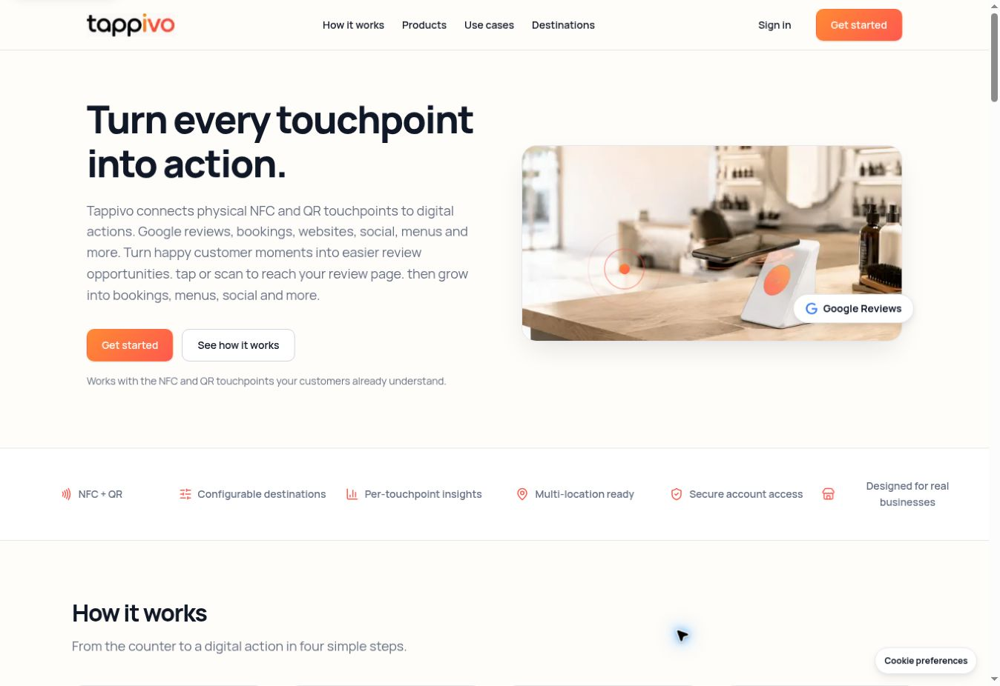
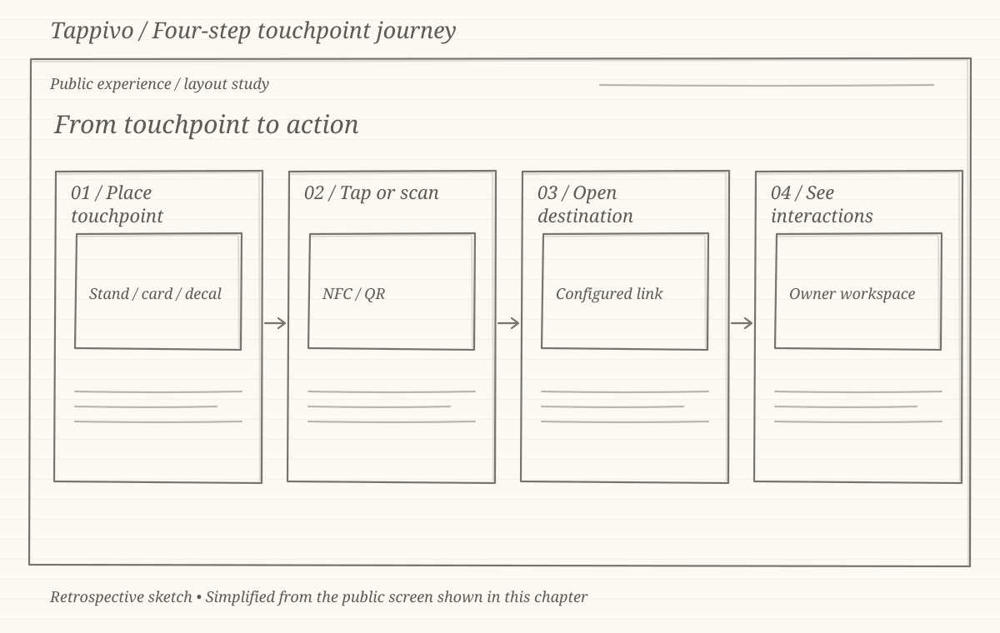
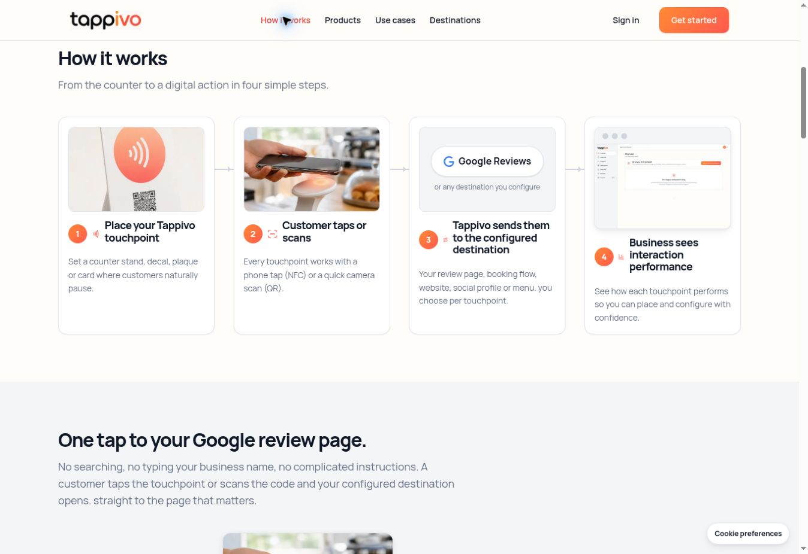
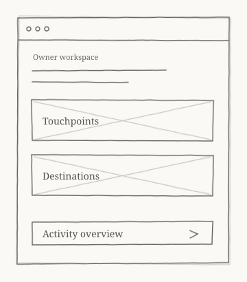
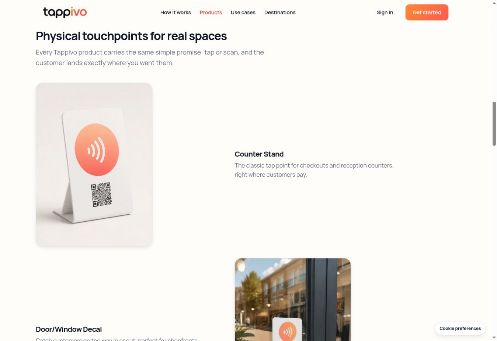
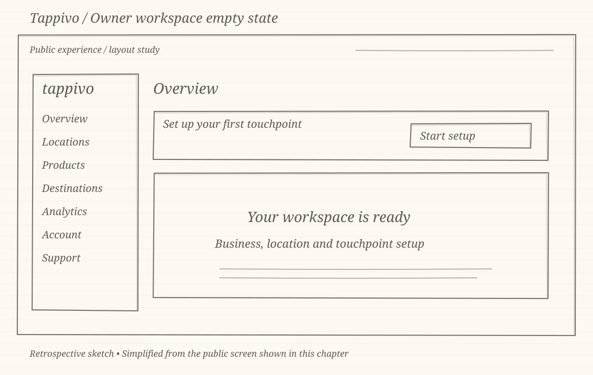
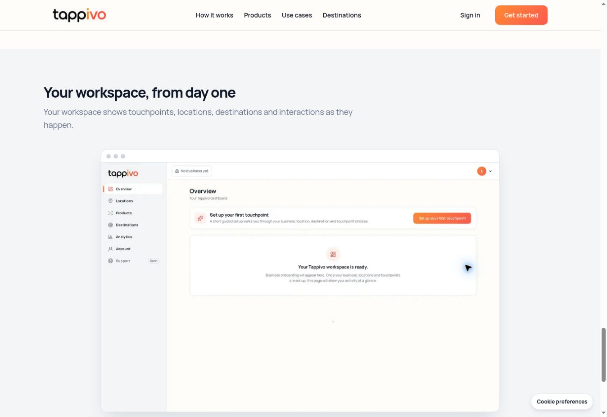

CASE STUDY 02 · NFC & QR CUSTOMER ENGAGEMENT
Tappivo customer engagement
Connecting a physical touchpoint to a useful digital destination. My contribution focused on onboarding, owner and administrator workspaces, and acceptance testing.
Visit TappivoTHE LIVE PUBLIC WEBSITE

The sketches are retrospective layout studies created for this portfolio. They simplify the matching public screens and are not original design-stage artefacts.
01 / THE CHALLENGE
A simple tap has a product behind it.
Customers only need to tap or scan. Business owners need to understand which touchpoint they have, where it belongs and which destination it opens. Administrators need a clear route through ordering and provisioning.
I shaped onboarding, workspace concepts, destinations and analytics direction, then validated the agreed journeys through acceptance testing.


02 / THE CUSTOMER JOURNEY
Explain both sides of the interaction.
The public walkthrough makes the sequence visible in four steps. It connects the customer’s action to the destination and then to the business owner’s workspace.
The product decision is to give each touchpoint one configured destination. This keeps the customer’s next action clear while leaving the owner able to update where it leads.


03 / PHYSICAL TO DIGITAL
Give the touchpoint a place and a purpose.
A stand at a counter and a decal on a window share the same interaction but fit different spaces. The public product presentation explains placement alongside the physical product.
This gives onboarding a concrete task: connect a business, a location, a physical touchpoint and its destination. It also gives provisioning and acceptance testing a complete journey to follow.


04 / THE OWNER WORKSPACE
An empty workspace still needs direction.
The published preview separates locations, products, destinations and analytics in the navigation. The overview prompts the owner to set up a first touchpoint before expecting activity.
My workspace contribution covered the owner and super-admin journeys, ordering and provisioning concepts, and analytics direction. This public preview illustrates the owner starting point; it does not show the private administrator workflow.
05 / DELIVERY AND LEARNING
Check the journey across the handoffs.
Acceptance testing focused on the journeys defined for delivery, including the relationship between setup, touchpoints and destinations. The central design goal was to make the physical-to-digital chain understandable.
The captures document the current public presentation in October 2026. Private account behaviour and engagement results are outside the evidence shown here.
More from my portfolio
LET’S CONNECT
Have a product challenge?
I’m happy to discuss product management, UX/UI and digital delivery.
t02ft22@gmail.com